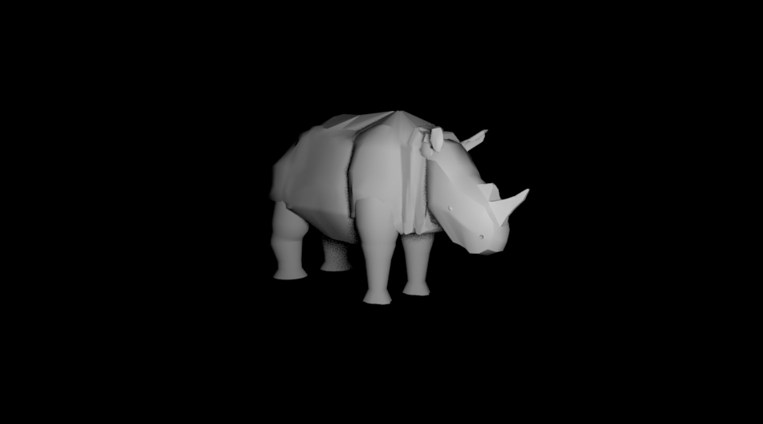
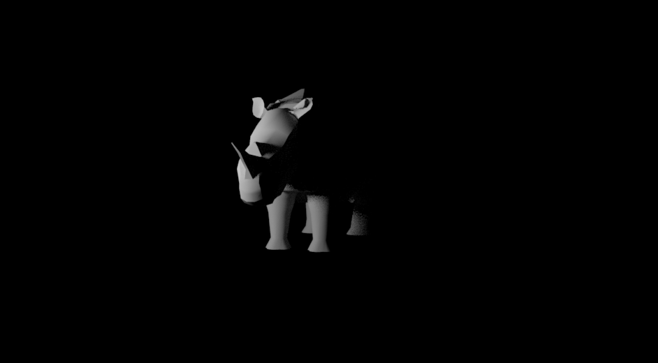

"Rhino"
8.1.20
This is a rhino one of my last favorite models ive made so far but it one of the classics so I wont be getting rid of it anytime soon, I wanted to try to create my first animal based on one of my favorite animals which is the gray rhino.